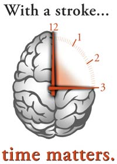

Neurosciences Institute - Neurology - Stroke Program - Warning Signs
Warning signs of stroke and what you can do about it.
Stroke is the leading cause of adult disability and the third leading cause of death in the United States. Stroke is a disease that affects the arteries of the brain, interrupting blood flow and depriving the brain of oxygen, injuring parts of the brain that control speech, movement and sensation. The devastating effects of stroke are often permanent.
The good news is that major advances in the treatment of acute stroke have been made over the last 10 years, but you must act immediately. Every minute counts! Intravenous clot busting drugs can only be used within 3 hours of the onset of these symptoms. At Albany Medical Center, our stroke team has advanced procedures that allow us to treat stroke 6-8 hours after the onset of symptoms, however, all therapies require a stroke victim to get to the hospital right away.
Know the signs and symptoms so that if you or someone you witness is having a stroke you know what to do.
| Sudden onset of: | |
| 1. | Numbness or weakness of the face, arm or leg, especially on one side of the body |
| 2. | Confusion or trouble speaking or understanding |
| 3. | Trouble seeing in one or both eyes |
| 4. | Trouble walking, dizziness, loss of balance or coordination |
| 5. | Severe headache with no known cause |
If you think someone you are with is having a stroke but are unsure, ask them 3 simple things:
- Ask them to SMILE
- Ask them to RAISE BOTH ARMS
- Ask them to SPEAK A SIMPLE SENTENCE (For example, "It is sunny out today.")
- If they have trouble with any of these tasks, act immediately! CALL 911 and report the symptoms to the dispatcher.
- Stay calm and remain with the patient until help arrives. No food or drink.
- Note the time the symptoms started and report it to the emergency medical providers.
- Remember: Time lost is brain lost!